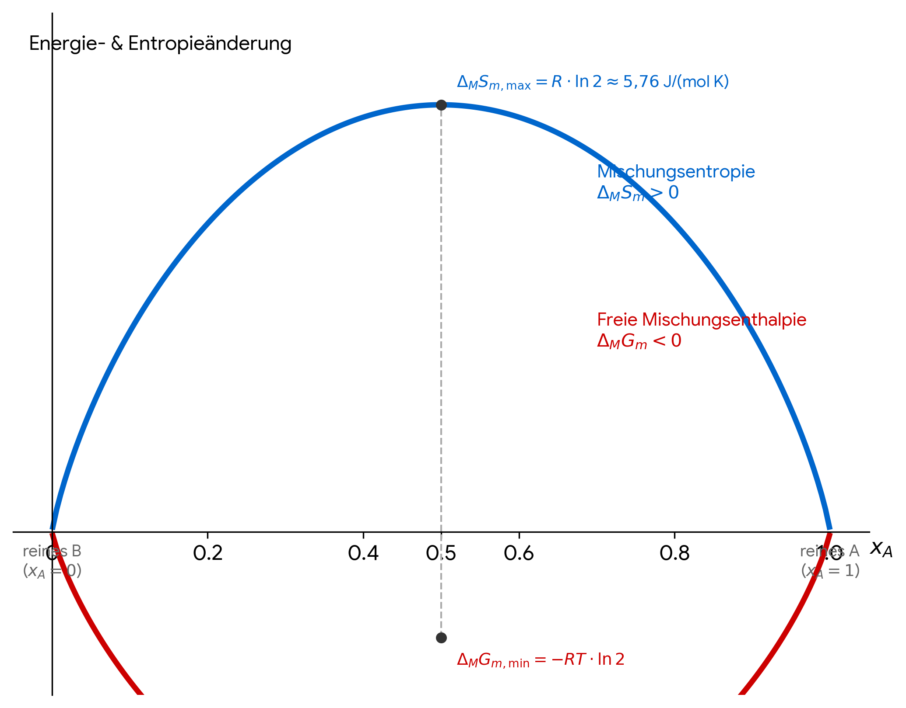
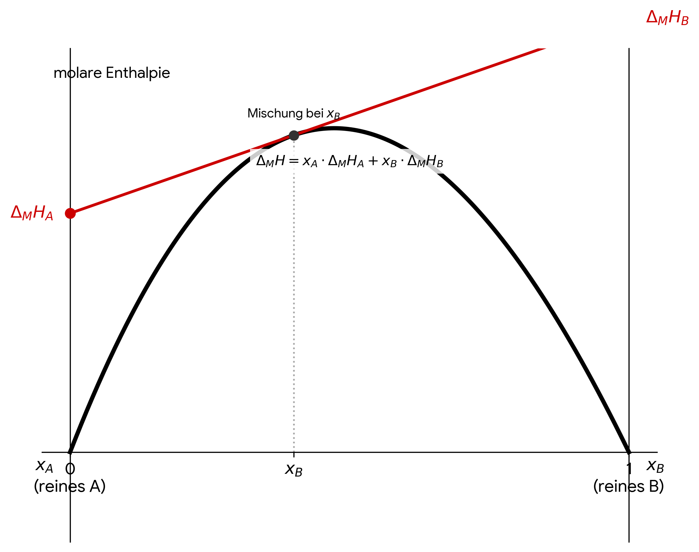
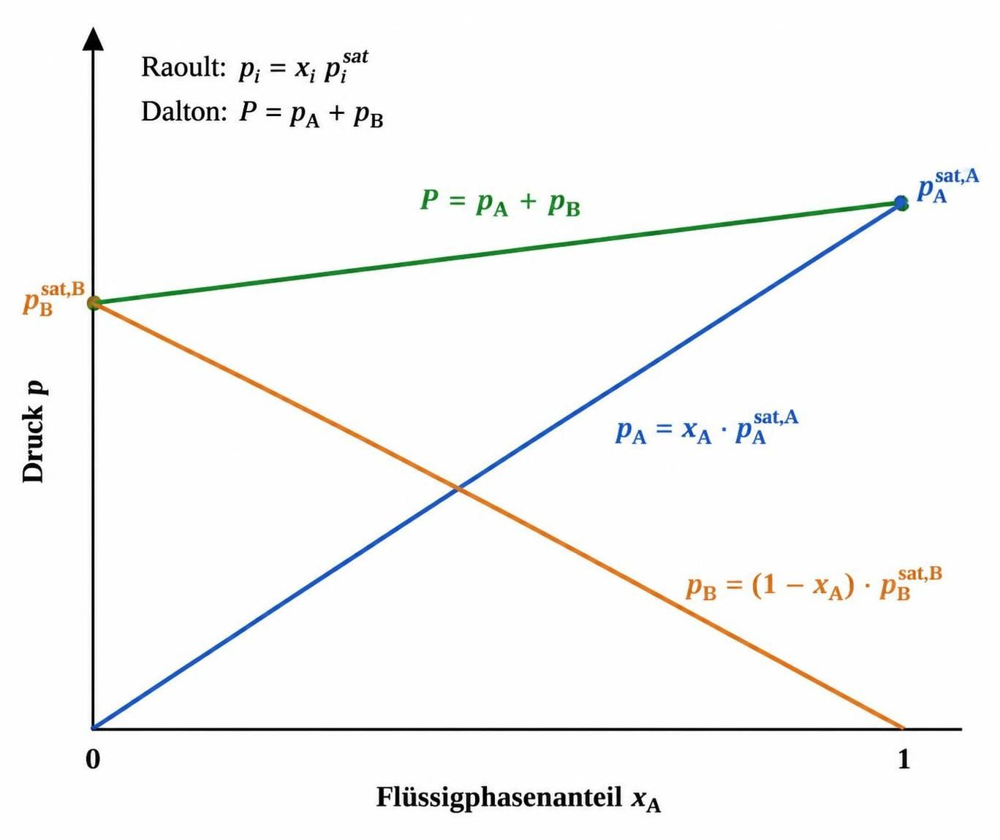
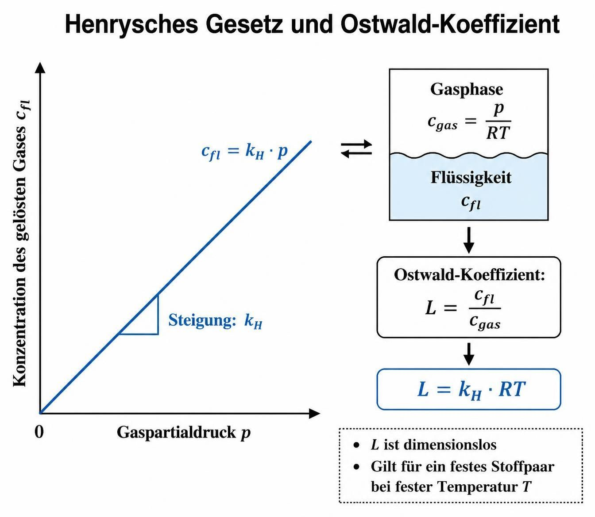
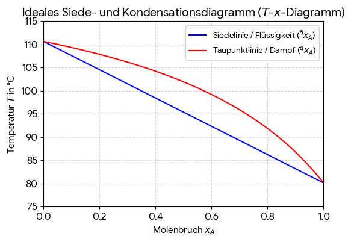

1.3 Mischungsphasen & Grenzflächen
Hier entsteht deine Formelsammlung zu idealen/realen Mischungen und Oberflächenadsorption.
Clapeyron- und Clausius-Clapeyron-Gleichung
Für das Gleichgewicht zwischen zwei Phasen gilt die Clapeyron-Gleichung:
dp/dT = ΔtrH / (T ΔtrV)Sie beschreibt die Steigung einer Phasengrenzlinie im p-T-Diagramm. Bei Einkomponentensystemen betrifft das etwa Schmelz-, Siede- und Sublimationsgleichgewichte sowie polymorphe Umwandlungen.
Für das Flüssigkeit-Dampf-Gleichgewicht kann man das molare Volumen der Flüssigkeit gegenüber dem des Dampfes vernachlässigen und den Dampf als ideales Gas behandeln. Dann erhält man die Clausius-Clapeyron-Gleichung:
d ln p/dT = ΔvH / (RT2)Bei näherungsweise temperaturunabhängiger Verdampfungsenthalpie ΔvH folgt durch Integration:
ln(p/p0) = -(ΔvH/R)(1/T - 1/T0)Umgestellt ergibt sich eine Geradengleichung:
y = m x + b
y = ln(p/p0), x = 1/T, m = -ΔvH/R
Aus der Steigung eines Diagramms von ln(p/p0) gegen 1/T lässt sich somit ΔvH bestimmen.
Für andere Phasengleichgewichte kann die Clapeyron-Gleichung näherungsweise integriert werden. Wenn ΔtrH/ΔtrV als konstant angenommen wird:
p - p0 = (ΔtrH/ΔtrV) ln(T/T0)
Diese Näherung kann beispielsweise für Schmelzgleichgewichte oder Fest-Fest-Umwandlungen verwendet werden, sofern sich ΔtrH und ΔtrV im betrachteten Temperaturbereich nur wenig ändern.
Notation: ΔtrH und ΔtrV bezeichnen die molare Enthalpie- bzw. Volumenänderung beim Phasenübergang. „tr“ steht für „transition“ (Übergang). Die Differenzen werden als Endzustand minus Anfangszustand des Übergangs gebildet. Beim Verdampfen gilt zum Beispiel: ΔvH = HDampf - HFlüssigkeit und ΔvV = VDampf - VFlüssigkeit.
Mischungsvorgänge
Für ideale Mischungen gilt:
- ideale Lösungen
- ideale Gasgemische
- ideale feste Lösungen
SAnfang = nASm,A + nBSm,B
SEnde = nA(Sm,A - R ln xA) + nB(Sm,B - R ln xB)
ΔMS = SEnde - SAnfang
ΔMS = -R(nA + nB) (xA ln xA + xB ln xB)
Allgemein:
ΔMS = -R Σi ni ln xi (ΔMSm = -R Σi xi ln xi)
Die Mischungsentropie ist positiv, wenn verschiedene Komponenten gemischt werden. Für identische Stoffe entsteht keine Mischungsentropie.
ΔMS = -R (nA ln xA + nB ln xB)
ΔMS = -nR (xA ln xA + xB ln xB)
ΔMG = -nRT (xA ln xA + xB ln xB); (ideal)
ΔMG = -nRT (xA ln aA + xB ln aB); (real)
Freie Enthalpie des Mischvorgangs zweier Gase mit unterschiedlichen Drücken. Zu der freien Mischungsenthalpie kommt noch die für die Kompression und Expansion der beiden Gase dazu.
Mischen des selben Gases zweier unterschiedlicher Drücke:
ΔMG = n1 RT ln(p1/p) + n2 RT ln(p2/p)
Entropie der idealen Mischung: Summe der reinen getrennten Gase + Mischungsentropie:
ΔMS = (nA Sm,A + nB Sm,B) + (-R (nA ln xA + nB ln xB))
ΔMS = Σ (ni Sm,i) - R Σ (ni ln xi)
ΔMSm,max = R ln 2 = 0,693 R = 5,76 J/(mol K)
... für xA = xB = 0,5
ΔMSm,min = 0; für xA = 1 oder xA = 0
ΔMSm und ΔMGm - Diagramm

für eine verdampfende Flüssigkeit + unlösliches Gas gilt:
VGas+Dampf = RT nGas / (pgesamt - pDampfdruck)
Hinter dieser Gleichung steckt das Dalton-Gesetz der Partialdrücke kombiniert mit dem Idealen Gasgesetz [1.1]. Sie beschreibt mathematisch perfekt, wie das Gesamtvolumen einer Gasphase ansteigt, wenn eine Flüssigkeit in einen Raum verdampft, in dem sich bereits ein anderes, unlösliches Gas (wie z. B. Luft über Wasser) befindet [1.1].
reguläre Mischungen:
ΔMS = ΔMSideal
ΔMH = TK ΔMSideal (ΔMHideal = 0)
ΔMH = -R TK (xA ln xA + xB ln xB)
ΔMG = ΔMH - T ΔMSideal = R (xA ln xA + xB ln xB) (TK-T)
TK : beschreibt den Übergang von einer homogenen Mischung zur spontanen Phasentrennung (Entmischung), wie man sie beispielsweise von Öl und Wasser kennt [1.1].
Integrale Mischungsenthalpie als Funktion von nA und nB:
ΔMh = -c ΔM T
(Die Messung im Labor)
Wenn man zwei Stoffe im Kalorimeter mischt, misst man die Temperaturänderung. Multipliziert mit der Wärmekapazität des Kalorimeters ergibt das die gesamte, absolute (integrale) Mischungsenthalpie der Probe.
Partiell molare Mischungsenthalpien,
Enthalpieänderung pro Mol des Stoffes i beim Mischen:
ΔMHA = (∂ΔMh / ∂nA)T,p,ni
ΔMHB = (∂ΔMh / ∂nB)T,p,ni
(Die Steigungen)
Sie beschreibt, wie viel Enthalpie sich ändert, wenn ich ein Mol der Komponente A in eine bereits bestehende Mischung hineingebe.
Berechnung der integralen Mischungsenthalpie mithilfe der partiell molaren Mischungsentahlien:
ΔMh = nA ΔMHA + nB ΔMHB
Das Euler-Theorem (Zusammensetzung)
Da Enthalpie eine extensive Eigenschaft ist (sie verdoppelt sich, wenn man die Stoffmenge verdoppelt), darf man die Gesamtenthalpie über diesen „Euler-Trick“ einfach aus den partiellen Molmengen aufaddieren.
Mittlere molare Mischungsenthalpie:
ΔMH = ΔMh / (nA+nB)
ΔMH = xA ΔMHA + xB ΔMHB
(Der Übergang zu molaren Brüchen)
Teilt man die gesamte Enthalpie durch die Gesamtstoffmenge (nA+nB), erhält man die mittlere molare Mischungsenthalpie. Das ist genau die Größe, die man später in Diagrammen gegen den Molenbruch xA aufträgt.
Geometrische Herleitung partiell molarer Enthalpien

Raoultsches und Dalton'sches Gesetz
Dampfdruck eines idealen binären Lösemittelgemischs

Henrysches Gesetz und Ostwald-Koeffizient
Löslichkeit von Gasen in Flüssigkeiten
Gas in flüssiger Phase: cfl
Gas in Gasphase: pgas
Der Ostwald-Koeffizient L
L = n R T / (pgas VLM) ; ideales Gas, Vgas=nRT/pgas
L = RT ⋅ cfl / pgas ; n/VLM=cfl
L = cfl/cgas ; RT/pgas=V/n=1/cgas
L = kH,c RT ; cfl=kH,c pgas , 1/cgas=RT/pgas
Henrysches Gesetz und Ostwald-Koeffizient

Kolligative Eigenschaften von Lösungen
Eigenschaften, die nur von der Teilchenzahl (Konzentration) des gelösten Stoffes abhängen, nicht von dessen chemischer Natur:
Π = i · c · R · T ; i: Vervielfachung der Stoffmenge bei Dissoziation
Legende:
Π = Osmotischer Druck | c = Stoffmengenkonzentration
Δp = Dampfdruckänderung | xB = Stoffmengenanteil des Gelösten
Ke / Kk = Ebullioskopische / Kryoskopische Konstante des Lösemittels
bB = Molalität des gelösten Stoffes (wichtig: Molalität, nicht Molarität!)
Gibbssches Phasengesetz (Phasenregel)
- F: Freiheitsgrade (Varianz des Systems)
- P: Phasen (homogene Bereiche)
- C: unabhängige Komponenten (Bestandteile)
- S: Spezies (chemische Individuen)
- R: Restriktionen / Einschränkungen (Reaktionsgleichungen, Elektroneutralität)
Die reduzierte Phasenregel (für kondensierte Systeme):
Merksatz: Gilt für Systeme, die nur aus Feststoffen und Flüssigkeiten bestehen, da diese kaum vom Druck beeinflusst werden (der Druck wird als konstant auf 1 bar angenommen).
Beispiel 1: Thermische Zersetzung von Kalk
CaCO3(s) → CaO(s) + CO2(g) ⇒ P = 3, S = 3, R = 1 ⇒ C = 2
Ergebnis: F = 2 – 3 + 2 = 1
Beispiel 2: Thermische Zersetzung von Ammoniumchlorid
(absolute Klassiker für Prüfungsfragen)
NH4Cl(s) → NH3(g) + HCl(g) | P = 2, S = 3
- Szenario 1: Reines NH4Cl im Vakuum (Spezialfall)
Restriktionen: R = 2 (1x Reaktion, 1x Stöchiometrie c(NH3) = c(HCl))
Komponenten: C = 3 – 2 = 1
Freiheitsgrade: F = 1 – 2 + 2 = 1 (univariant)
Wenn Sie die Temperatur festlegen, stellt sich automatisch ein ganz bestimmter, fester Zersetzungsdruck ein.
- Szenario 2: Beliebige Gasmischung (Allgemeiner Fall)
Restriktionen: R = 1 (nur die chemische Reaktion)
Komponenten: C = 3 – 1 = 2
Freiheitsgrade: F = 2 – 2 + 2 = 2 (bivariant)
Das System kann nun das Verhältnis der Gase NH3 zu HCl im Gasraum verschieben. Erst wenn Temperatur und Gesamtdruck von außen fest vorgegeben werden, stellt sich ein eindeutiges Gasverhältnis ein.
Beispiel 3: Wässrige NaCl-Lösung mit Bodensatz
NaCl(s) ⇌ Na+(aq) + Cl−(aq) in H2O
- Phasen (P = 2): 1x fest (NaCl-Bodensatz), 1x flüssig (wässrige Lösung)
- Spezies (S = 4): H2O, NaCl(s), Na+(aq), Cl−(aq)
- Restriktionen (R = 2):
• R1: Chemisches Gleichgewicht (Löslichkeitsprodukt)
• R2: Elektroneutralität der Lösung (c(Na+) = c(Cl−)) - Komponenten: C = 4 – 2 = 2 (Zweikomponentensystem)
- Freiheitsgrade: F = 2 – 2 + 2 = 2 (bivariant)
Ergebnis: Temperatur und Druck können frei gewählt werden; die Sättigungskonzentration stellt sich dann automatisch ein. - Freiheitsgrade (unter Normaldruck, p=konst.): Fred = 2 – 2 + 1 = 1 (univariant)
Praxisnahe Erklärung: Da der Druck im Labor konstant ist, gibt es nur einen echten Freiheitsgrad: die Temperatur. Wählen Sie eine Temperatur (z. B. 25 °C), steht die maximale Löslichkeit (Sättigungskonzentration) des Kochsalzes automatisch naturgesetzlich fest.
Beispiel 4: NaCl + BaCl2 gelöst in Wasser mit beiden Bodenkörpern
- Phasen (P = 3): 1x flüssig (Lösung), 2x fest (NaCl-Bodensatz & BaCl2-Bodensatz)
- Spezies (S = 6): H2O, NaCl(s), BaCl2(s), Na+(aq), Ba2+(aq), Cl−(aq)
- Restriktionen (R = 3): 2 unabhängigen Löslichkeitsgleichgewichte und die Ladungsbilanz c(Na+) + 2·c(Ba2+) = c(Cl−).
- Komponenten: C = 6 – 3 = 3
- Freiheitsgrade (unter Normaldruck): F = 3 – 3 + 1 = 1 (bivariant)
Praxisnahe Erklärung:Es gibt nur genau einen einzigen Freiheitsgrad Fred = 1, und das ist die Temperatur.
Beispiel 5: Tripelpunkt eines reinen Metalls (Fest + Flüssig + Gasförmig)
- Spezies (S = 1): Reines Metall (z. B. Fe oder Cu)
- Restriktionen (R = 0): Keine chemischen Reaktionen
- Komponenten: C = 1 – 0 = 1 (Einkomponentensystem)
- Phasen (P = 3): 3x (fest, flüssig, gasförmig)
- Freiheitsgrade: F = 1 – 3 + 2 = 0 (invariant)
Praxisnahe Erklärung: Es gibt keinen Freiheitsgrad. Alle drei Phasen können nur bei einer ganz exakten, naturgesetzlich fest vorgegebenen Temperatur und einem exakten Druck gleichzeitig koexistieren.
Binäres Phasendiagramm mit Eutektikum
Wichtige Merksätze für die Gibbs'sche Phasenregel:
- Die Schmelze ist eine einzige, homogene flüssige Phase (fl. A + fl. B bilden zusammen P = 1).
- Das Eutektikum ist keine eigene Phase und keine eigene chemische Spezies. Es handelt sich mikroskopisch um ein Gefüge, also eine feine mechanische Mischung aus kristallinem, festem A und festem B.
- Unabhängige Komponenten: Da keine chemischen Reaktionen oder Ladungsbilanzen vorliegen, gilt im gesamten Diagramm starr C = 2 (Komponente A und B).
- Reduzierte Phasenregel (da p = konst.):
F = C − P + 1 = 3 − P
📊 Phasendiagramm-Tabelle: Freiheitsgrade im Eutektikum anzeigen (Hier klicken zum Ausklappen)
| Bereich / Ort im Diagramm | Existierende Phasen (P) | Komponenten (C) | Freiheitsgrade (F) | Physikalische Bedeutung / Erklärung |
|---|---|---|---|---|
| In der Schmelze (oberhalb Liquiduslinie) |
1 (homogene flüssige Mischung) |
2 | 2 (bivariant) |
Temperatur und Zusammensetzung (Molenbruch) der Schmelze können unabhängig voneinander frei gewählt werden. |
| Auf der Liquiduslinie / Zweiphasengebiet (auch fälschlich "übersättigt") |
2 (Schmelze + festes A) |
2 | 1 (univariant) |
Wählt man eine Temperatur, steht die Zusammensetzung der verbleibenden Schmelze über die Kurve automatisch fest. |
| Eutektischer Punkt | 3 (Schmelze + festes A + festes B) |
2 | 0 (invariant) |
Das System ist fixiert. Das Eutektikum erstarrt bzw. schmilzt bei einer ganz exakten, unveränderlichen Temperatur und Zusammensetzung. |
| Unterhalb der Soliduslinie / Eutektikalen | 2 (festes A + festes B) |
2 | 1 (univariant) |
Die Schmelze ist komplett erstarrt. Es gibt nur noch einen Freiheitsgrad: die Temperatur (Erwärmen/Abkühlen des Feststoffs). |
Siedediagramm T-x-Diagramm
- flµA = gµA (Gleichgewichtsbedingung)
- µ = µ0 + RT ln x (Chemisches Potential idealer Mischungen)
- µ0 = H0 – T S0 (Zusammenhang Enthalpie & Entropie)
- xB = 1 – xA (Molenbruch-Bedingung)
- ΔS0 = ΔVH0 / Tv (Trouton'sche Regel)
flµ0 + RT ln flx = gµ0 + RT ln gx → gµ0 – flµ0 = RT ln (flx / gx)
gµ0 – flµ0 = gH0 – T gS0 – (flH0 – T flS0) = RT ln (flx / gx)
gH0 – flH0 = ΔVH0; gS0 – flS0 = ΔVH0 / Tv
--------------------------------------------
(Gl.1) ln (flxA / gxA) = (Δ0Hv,A / R) ⋅ [(Tv,A – T) / (Tv,A ⋅ T)]
(Gl.2) ln [(1 - flxA) / (1 - gxA)] = (ΔVH0B / R) ⋅ ((Tv,B – T) / (Tv,B ⋅ T))
Bedeutung von Gl.1 und Gl.2:
Diese beiden Gleichungen repräsentieren die Phasengleichgewichtsbedingungen für ein ideales binäres System. Sie verknüpfen die reinen Stoffdaten der Komponenten (Siedetemperaturen Tv und Verdampfungsenthalpien ΔHv) mit der Temperatur T des Systems. Durch simultanes Auflösen dieses Gleichungssystems nach flxA und gxA lässt sich der exakte mathematische Verlauf der Siedelinie und der Taupunktlinie im T-x-Diagramm berechnen.
T-x-Diagramm

Mathematische Herleitung der Siedelinie
Um die Zusammensetzung der flüssigen Phase (flxA) in Abhängigkeit von der Temperatur T zu berechnen, lösen wir das gekoppelte Gleichungssystem aus (Gl.1) und (Gl.2) analytisch auf. Zur Vereinfachung definieren wir die temperaturabhängigen Terme als Konstanten KA und KB:
Wir entlogarithmieren beide Basisgleichungen durch Anwendung der Exponentialfunktion (ex):
flxB / gxB = exp [ (ΔVH0B / R) ⋅ ((Tv,B – T) / (Tv,B ⋅ T)) ] ≡ KB(T) → gxB = flxB / KB
Da die Summe der Molenbrüche in der Dampfphase eins ergeben muss (gxA + gxB = 1), setzen wir die Ausdrücke ein:
Wir multiplizieren die gesamte Gleichung mit dem Hauptnenner (KA ⋅ KB):
flxA ⋅ KB + KA - flxA ⋅ KA = KA ⋅ KB
flxA ⋅ (KB - KA) = KA ⋅ KB - KA
flxA ⋅ (KB - KA) = KA ⋅ (KB - 1)
flxA(T) = [ KA ⋅ (KB - 1) ] / [ KB - KA ]
Anwendung: Setzt man nun eine beliebige Temperatur T zwischen den Siedepunkten Tv,B und Tv,A in die Funktionen KA(T) und KB(T) ein, liefert diese Gleichung direkt den zugehörigen flüssigen Molenbruch flxA. Der zugehörige Dampfmolenbruch ergibt sich anschließend einfach aus: gxA = flxA / KA.